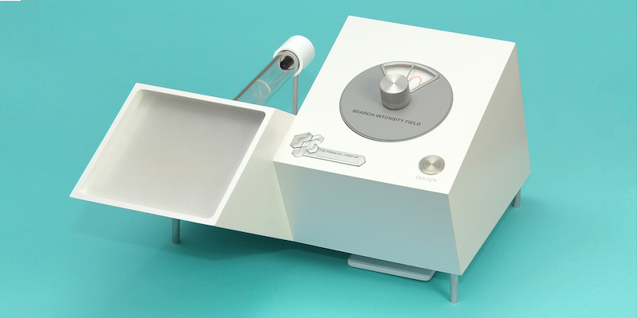

The Quantum Parallelograph is an exploratory public engagement project examining the scientific and philosophical ideas surrounding the theory of quantum physics and multiple universes. The device simulates the experience of users being able to glimpse into their "parallel lives" - to observe their alternate realities.
The project is rooted in the pioneering work of Professor David Deutsch of Oxford University, and the earlier work of Professor Hugh Everett, who argue for infinite copies of ourselves existing within multiple universes. The Quantum Parallelograph seeks to reveal to the user how such ideas of alternative realities may be envisaged.